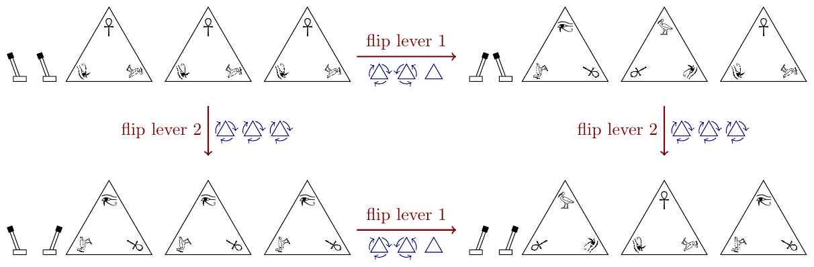

46th ICPC World Championship · Problem Z
Renowned professor of Egyptology Z Mummer is exploring a newly discovered tomb in Luxor where she finds a mysterious construction. On a wall, there is a row of k pyramid-shaped stone slabs. Each stone features three hieroglyphs: an ankh (top), an eye of Horus (bottom left), and an ibis (bottom right). Next to the wall there are n levers. Cautiously experimenting with these, wary of potential traps, the professor realizes that each lever rotates some of the pyramids clockwise or counter-clockwise so that another hieroglyph is pointing upwards on them. Flipping back a lever rotates the same pyramids in the opposite direction back to their original position. The levers operate completely independently of each other, so flipping or unflipping a lever has the same effect regardless of what states the other levers are in. See Figure Z.1 for an illustration.

Intrigued, Professor Mummer records the individual effect of each lever. Back at her university after the expedition, she assigns one of her students the laborious task of figuring out all 2n possible pyramid configurations (some of which may be identical) that can be achieved by flipping some subset of the levers, so that these can be studied further.
After many nights of careful calculations, the student is finally done and starts gathering his papers. But then disaster strikes: he accidentally spills some ink and completely destroys the professor’s original notes, which contained the only record of the individual effects of each lever.
The only chance to escape Professor Mummer’s wrath is to reconstruct the original notes from the list of possible pyramid configurations. This cannot be done completely unambiguously (for example, there is no way of distinguishing between different orderings of the same set of levers). But as long as the levers still result in the calculated list of pyramid configurations, this error is unlikely to be noticed (at least not until after the student has graduated).
The first line of input contains three integers n, k and t, where n (1 ≤ n ≤ 40) and k (1 ≤ k ≤ 5) are the number of levers and pyramids, respectively, and t (1 ≤ t ≤ 3k) is the number of different pyramid configurations. Then follow t lines describing the distinct possible pyramid configurations. Each such line consists of a string of length k describing the configuration and an integer f (1 ≤ f ≤ 2n) indicating the number of different lever settings which result in this configuration. The configuration is described using the letters ‘A’, ‘E’, and ‘I’. The jth character indicates the hieroglyph facing upwards on the jth pyramid: ‘A’ for ankh, ‘E’ for eye of Horus, and ‘I’ for ibis.
The t configurations given are pairwise distinct, the sum of f-values over all t lines equals 2n, and the input is such that at least one list of levers results in the given multiset of configurations.
Output n lines describing a possible set of levers that gives rise to the given multiset of pyramid configurations. Each line describes one lever using a string of length k consisting of the symbols ‘+’, ‘-’, or ‘0’. In each such string, the jth symbol describes the action of this lever on the jth pyramid: ‘+’ if the lever moves the pyramid clockwise, ‘-’ if the lever moves it counterclockwise, and ‘0’ if the lever does not move this pyramid.
If there is more than one possible solution, any one will be accepted.
2 3 4 EEE 1 EIA 1 IAE 1 AAA 1
+-0 +++
3 2 2 IA 4 AA 4
-0 00 00